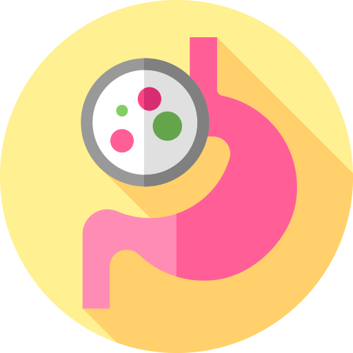
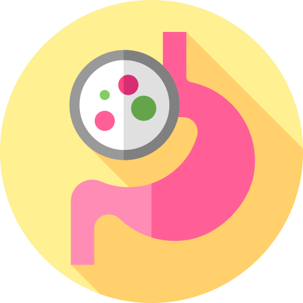
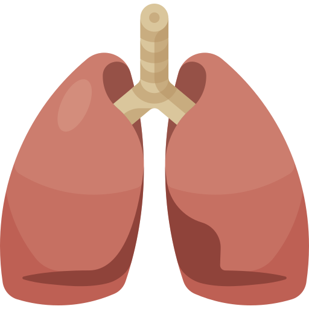
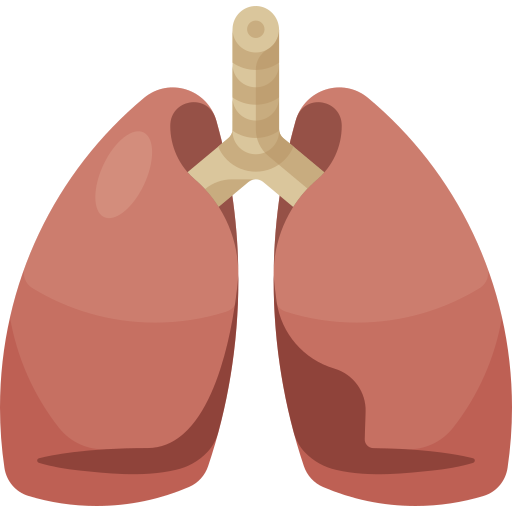

-
Accueil
-
Épidémiologie et mortalité
-
Pathologie et risques
-
Environnement physique et social
-
Économie
-
Vieillissement
-
Prévention
- Développé par Mickaël GAUBERT et Thibaud LAURENT dans le cadre d'un projet conjoint entre l'ENSC et l'École d'Ergothérapie de Bordeaux.
-
Accueil
En construction.
-
Épidémiologie et mortalité
 200 ans
200 ans
depuis la première cigarette
 120 millions
120 millions
de morts
2x plus de morts
que la seconde guerre mondiale
Depuis votre visite sur ce site, 5 personnes sont décédées à cause de leur cigarette...
... ainsi que 2 enfants parcequ'un de leur parent fumait.
Soit autant que :
 Le SIDA
+
Les homicides
+
Le SIDA
+
Les homicides
+
 L'alcool
+
L'alcool
+
 La drogue
réunis.
Et ça commence dès 15 ans.
La drogue
réunis.
Et ça commence dès 15 ans.
-
Pathologie et risques
Le tabagisme réduit d’environ 20-25 ans l’espérance de vie en comparaison à un non-fumeur.
Une cigarette est composée de nombreuses substances chimiques toxiques et cancérigènes telles que : nicotine, goudrons, gazs toxiques et métaux lourds.
 Une fois inhalés, ces produits vont s’attaquer aux cellules qui tapissent l’appareil respiratoire.
C’est une agression directe contre celui-ci qui va provoquer différentes maladies et affections.
Cancers :
54% des hommes et 29% des femmes meurent d’un cancer lié au tabac.
1/3 des cancers est dû au tabac, ils touchent les voies respiratoires :
lèvres
Une fois inhalés, ces produits vont s’attaquer aux cellules qui tapissent l’appareil respiratoire.
C’est une agression directe contre celui-ci qui va provoquer différentes maladies et affections.
Cancers :
54% des hommes et 29% des femmes meurent d’un cancer lié au tabac.
1/3 des cancers est dû au tabac, ils touchent les voies respiratoires :
lèvres
 bouche, langue
gorge, cordes vocales
trachée, bronches et poumons (80-90 % causés par le tabac)

oesophage et estomac (augmenté par la consommation d'alcool)
pancréas
reins et vessie
bouche, langue
gorge, cordes vocales
trachée, bronches et poumons (80-90 % causés par le tabac)

oesophage et estomac (augmenté par la consommation d'alcool)
pancréas
reins et vessie
 uterus
Maladie cardiovasculaire :
18% des hommes et 23% des femmes.
Infarctus, AVC, anévrysmes, hypertension artérielle.
Altération des artères cérébrale : conséquences directes sur mémoire, audition, vision (DMLA, cataracte).
Maladies infectieuses :
Infections ORL, otites, sinusites, angines, bronchites, grippes et pneumonies.
uterus
Maladie cardiovasculaire :
18% des hommes et 23% des femmes.
Infarctus, AVC, anévrysmes, hypertension artérielle.
Altération des artères cérébrale : conséquences directes sur mémoire, audition, vision (DMLA, cataracte).
Maladies infectieuses :
Infections ORL, otites, sinusites, angines, bronchites, grippes et pneumonies.
 Maladies inflammatoires...

...et maladies respiratoires :
BPCO (Bronchites chronique) 85% causées par le tabac, emphysème “manque de souffle”.
Maladies inflammatoires...

...et maladies respiratoires :
BPCO (Bronchites chronique) 85% causées par le tabac, emphysème “manque de souffle”.
 Autres :
Autres :
 Troubles métaboliques (diabète, obésité, hypercholestérolémie/triglycéridémie, carences en vitamines B,C).
Troubles métaboliques (diabète, obésité, hypercholestérolémie/triglycéridémie, carences en vitamines B,C).
 Altération de l’épiderme (psoriasis, eczéma, ride, teint terne, jaune).
Altération de l’épiderme (psoriasis, eczéma, ride, teint terne, jaune).
 Problèmes bucco-dentaires : infection des gencives, coloration et déchaussement des dents, altération des muqueuses (langue, papilles, lèvres) et organes vocaux, halitose (mauvaise haleine).
Problèmes bucco-dentaires : infection des gencives, coloration et déchaussement des dents, altération des muqueuses (langue, papilles, lèvres) et organes vocaux, halitose (mauvaise haleine).
 Problèmes sexuels : modifications hormonales, capacités diminuées (perte de libido), fertilité, ménopause précoce.
Problèmes sexuels : modifications hormonales, capacités diminuées (perte de libido), fertilité, ménopause précoce.
 Troubles du sommeil, fatigue, mauvaise humeur, stress.
Altération musculaire.
Risques pour les femmes enceintes :
Le tabac augmente le risque de fausse couche, de retard de croissance intra-utérin, et de naissances prématurées.
L'enfant peut également présenter de l'asthme ou des problèmes d'apprentissages.
1 femme sur 3, parvient à arrêter de fumer pendant la grossesse, et principalement sous contrôle médical.
Troubles du sommeil, fatigue, mauvaise humeur, stress.
Altération musculaire.
Risques pour les femmes enceintes :
Le tabac augmente le risque de fausse couche, de retard de croissance intra-utérin, et de naissances prématurées.
L'enfant peut également présenter de l'asthme ou des problèmes d'apprentissages.
1 femme sur 3, parvient à arrêter de fumer pendant la grossesse, et principalement sous contrôle médical.
-
Environnement physique et social
3. Impacts sur l'environnement physique et social
L’impact négatif du tabac sur l’environnement est méconnu mais il est bien réel. Il contribue au réchauffement climatique et à la mise en péril des écosystèmes de plusieurs manières.
Notamment avec les mégots, rejetés en grande quantité dans la nature, constituant une part importante de la pollution des espaces publics (800 tonnes par an). En effet, ils contiennent de nombreux produits toxiques et cancérigènes, ne sont pas biodégradables, polluent villes, faune et flore et principalement le milieu marin. Ils mettent environ 12 ans pour se désintégrer. La culture du tabac est elle aussi à l’origine de pollution, c’est la sixième la plus gourmande en pesticides mais également à la déforestation puisque pour sécher 1 hectare de tabac, il faut 1 hectare d’arbres soit 200 000 hectares/an.
Au niveau social, comparés aux non-fumeurs, les fumeurs sont légèrement plus jeunes et consomment plus d’alcool, cette double dépendance peut alors entraîner un véritable isolement social. De plus, il a été montré que les états de stress, les épisodes dépressifs, la consommation de psychotropes et de sédatifs sont plus fréquents chez les fumeurs, ces éléments tendant également à limiter la participation dans les différentes activités de la vie quotidienne. Enfin, l’impact social se retrouve autour des familles qui connaissent des décès, ou des maladies liés au tabac
La culture du tabac peut aussi avoir un impact sur les enfants, qui y travaillent et qui ont ce qu’on appelle « la maladie du tabac vert » et qui sont victimes d’une absorption cutanée de nicotine. Il y a aussi un impact sur l’ensemble de la population non-fumeuse (adulte et enfants), qui se retrouve exposée à la fumée (et donc aux maladies et conséquences du tabac) alors qu’elle contient 4000 substances chimique dont au moins 250 sont nocives.
-
Économie
4. Impacts sur l'économie
Selon l’INPES, l’Etat perçoit 10 milliards d’euros des taxes issues du tabac mais les coûts sociaux (prévention, dépenses de santé etc) s’élève aussi à 10 milliards d’euros.
Il y a des coûts directs, pour les frais médicaux par exemple des personnes malades à cause du tabac, mais aussi des coûts indirects si par exemple la maladie implique un arrêt maladie.
Pour les fumeurs, compte tenu du prix du tabac et de celui à venir qui pourrait être de 10 euros pour un paquet, cela constitue une réelle part du budget pour la personne et sa famille.
-
Vieillissement
5. Impacts sur le vieillissement
La cigarette a des effets nocifs sur notre santé, mais va aussi provoquer une vieillissement prématuré de manière générale en fonction de la durée d’exposition au tabagisme, du sexe et de l’âge des fumeur. Ce vieillissement se fait sur la peau, les cheveux qui deviennent gris et qui tombent (alopécie), la circulation sanguine avec vieillissement des artères (maladie cardiovasculaire) et le fonctionnement hormonal (ménopause précoce)
Une étude publiée dans The Lancet a montré que fumer accélère le vieillissement biologique de 4.6 ans, les auteurs arrivant à la conclusion d’un « pro-vieillissement » du tabac. Enfin, le tabac, avec l’ensemble des conséquences qu’il entraîne, est à l’origine d’une baisse de l’espérance de vie d’environ 4 ans.
-
Prévention
Dans le monde, il y a une surveillance de la consommation de tabac chez les jeunes et les adultes grâce à des enquêtes représentatives tous les 5 ans, mais dans seulement un tiers des pays du Monde.
En effet, 24 pays seulement, soit 15% de la population mondiale, participent à l’aide au sevrage avec une aide totale et partielle sur le coût. Des campagnes médiatiques sont menées dans 39 pays depuis les deux dernières années.
L’OMS a établi la Convention cadre, pour la lutte anti-tabac en février 2005, qui est une promotion de santé publique et un traité pour le droit à la meilleure santé pour tous. Pour l’appliquer, une démarche « MPOWER » en 6 mesures est établie pour diminuer la consommation du tabac :
- Mettre en place une surveillance de la consommation et des politiques de prévention (mois anti-tabac..)
- Protéger contre les fumées
- Offrir de l’aide à ceux qui veulent renoncer
- Mettre en garde contre les dangers
- Faire respecter l’interdiction de la publicité pour le tabac, la promotion et parrainage et lutter contre le commerce illicite (permet de diminuer de 7-16% la consommation)
- Augmenter les taxes (à 75% pour 29 pays)
Elle a pour objectif final de réduire de 30% la consommation de tabac d’ici 2030.
L’INPES a aussi un rôle dans le dispositif de lutte contre le tabagisme, avec des mesures similaires, mais aussi avec une augmentation des connaissances de la population sur le tabagisme et ses conséquences. De plus, il vise à poursuivre la dénormalisation, à dissuader les jeunes de commencer à fumer, et réalise des campagnes de communication, et d’accompagnement personnalisé grâce au dispositif Tabac Info Service qui procure une aide à distance à l’aide d’un service téléphonique et internet.
En France, notre gouvernement a également certaines missions :
- Augmenter l’offre de consultation pour l’aide au sevrage en passant de 500 à 1000 lieux sur notre territoire
- Proposer des prises en charge pour l’accompagnement médicamenteux d’aide à l’arrêt du tabac.
De plus, la stratégie Nationale de santé 2017-2022 pourrait elle aussi améliorer les choses avec ces 4 priorités :
- La prévention et la promotion de la santé tout au long de la vie et dans tous les milieux (avec la lutte des conduites addictives, la prévention de la perte d’autonomie entre autres, avec attention particulière pour les enfants et les jeunes
- La lutte contre les inégalités sociales et territoriales d’accès aux soins : parcours organisés sur le territoire avec approche centrée sur les besoins des patients, plan d’accès aux soins
- L’accroissement de la pertinence et de la qualité des soins
- L’innovation organisationnelle, technologique, médicale et numérique
Malgré tout en France, seulement 1,9% des dépenses de santé sont allouées à la prévention, contre 3% dans certains pays. Il n’est pas possible à tous les français d’y accéder et ce, pour de multiples raisons. « L’expression accès aux soins est polysémique et désigne tout autant une possibilité ou accessibilité, notamment en termes de droits sociaux, que l’usage ou recours qui en est fait ou pas […] l’accès aux services de santé est décrit comme la résultante de 3 ordres de facteurs : déterminants sociétaux, caractéristiques du système de soins et déterminants individuels. ».